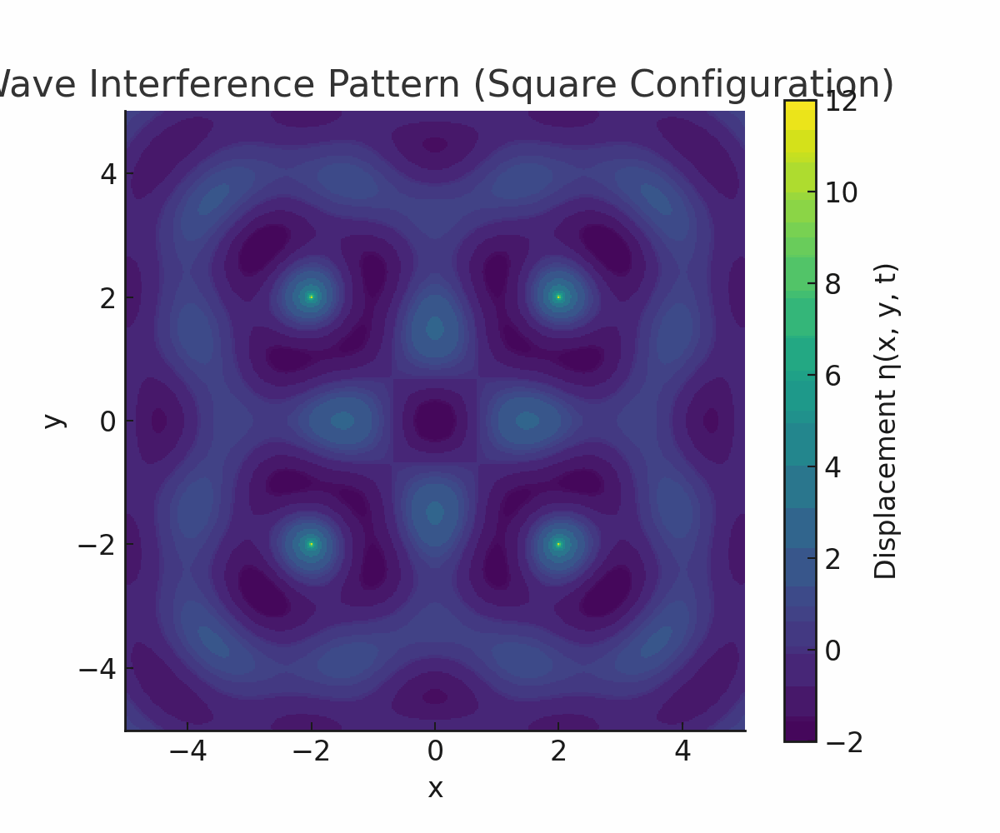
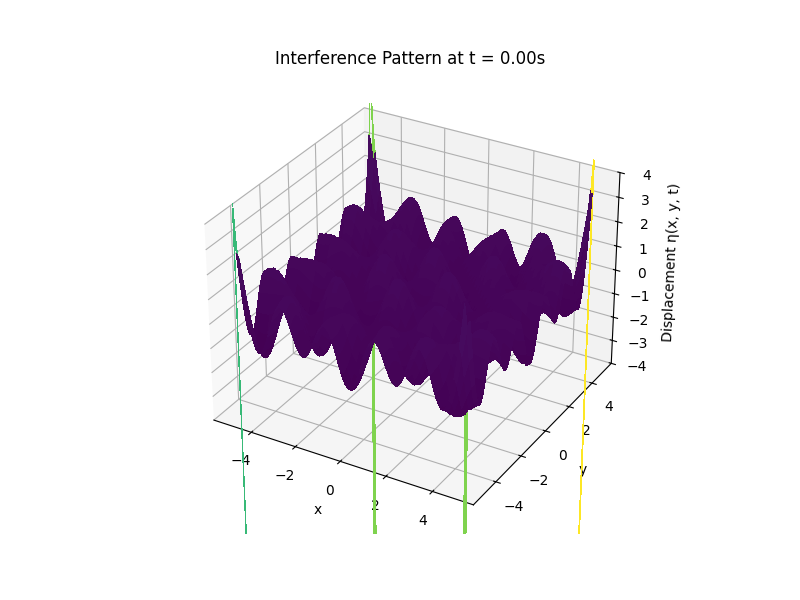

Problem 1
Interference Patterns from Point Wave Sources on a Water Surface
Objective
To analyze the interference pattern formed by the superposition of circular waves emitted from point sources placed at the vertices of a regular polygon on the water surface.
Motivation
Interference occurs when waves overlap, creating complex patterns that illustrate how waves interact. By placing point sources at the vertices of a regular polygon, we can observe and analyze the constructive and destructive interference patterns resulting from wave superposition.
Selecting a Regular Polygon
We select a square (regular polygon with 4 equal sides and angles) as the configuration.
Position the Sources
Let the side length of the square be L, and place the center of the square at the origin (0, 0). The coordinates of the four sources are:
- \((x_1, y_1) = (-L/2, -L/2)\)
- \((x_2, y_2) = (L/2, -L/2)\)
- \((x_3, y_3) = (L/2, L/2)\)
- \((x_4, y_4) = (-L/2, L/2)\)
Wave Equations for Each Source
Each wave is described by:
Where:
- \(r_i = \sqrt{(x - x_i)^2 + (y - y_i)^2}\)
- \(A\): Amplitude of the wave
- \(k = \frac{2\pi}{\lambda}\): Wave number
- \(\omega = 2\pi f\): Angular frequency
- \(\phi\): Initial phase (assumed 0 for all sources for simplicity)
Superposition of Waves
The total displacement at point \((x, y)\) is the sum:
Analyzing Interference Patterns
Constructive Interference
Occurs when the waves arrive in phase:
This leads to amplification.
Destructive Interference
Occurs when waves are out of phase by \(\(\pi\)\):
This leads to cancellation.
Visualization
The resulting pattern can be visualized using a 2D color map of \(\eta_{\text{sum}}(x, y, t)\) at a fixed time. High-intensity regions represent constructive interference; dark regions represent destructive interference.

Optional Parameters Used for Simulation
- Amplitude \(A = 1\)
- Wavelength \(\lambda = 2\)
- Frequency \(f = 1\)
- Phase \(\phi = 0\)
- Square side length \(L = 4\)
3d Visualization

Conclusion
By placing wave sources at the corners of a square and applying the principle of superposition, we can visualize intricate interference patterns. This exercise provides insight into the behavior of waves and how geometry influences interference on a water surface.